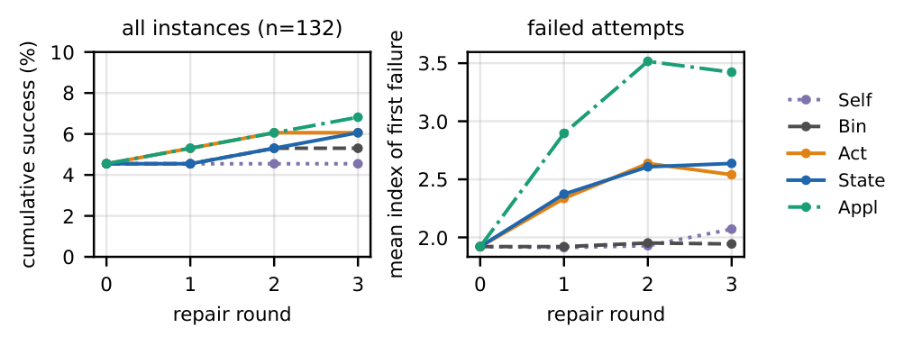

TL;DR
For a 4B open model, richer validator feedback changes how plans fail but barely changes whether they succeed: the validator's message is used locally but cannot supply missing planning competence.
Abstract
Generate-validate-repair loops for planning rely on a sound symbolic verifier, and studies with GPT-4 concluded that the content of the verifier's feedback matters little because the verifier mainly acts as a stopping criterion. We test whether this holds for a frozen 4B open model at inference time. Qwen3-4B-Instruct-2507 writes one-shot PDDL plans for 132 instances of Blocksworld, an obfuscated Mystery Blocksworld, Gripper and Logistics; a STRIPS executor validates them, and every failure enters up to three repair rounds under five arms: self-verification without validator information, a binary verdict, the first failing action with its unmet preconditions, that plus all facts of the failing state, and that plus the actions applicable in it. One-shot success is 4.5%, and no arm repairs more than 2.4% of the failures; the primary contrast, localized versus binary feedback, is +0.8 points (95% CI [0.0, 2.4]). Below the success threshold the arms do differ: localized feedback cuts plan repetition from 44% to 6% of turns and doubles the rate at which the next attempt gets past the reported failing action (14.5% versus 7.2%); listing the applicable actions raises that rate to 54%, but the revised plans fail one or two actions later. Full-state feedback costs about 45 extra prompt tokens per round, while self-verification triples output length and outputs facts parsed as actions. For a small model the validator's message is used locally but cannot supply the planning competence that is missing.
Results

Paper
Download PDF (11 pages)
BibTeX
@misc{ma2026how,
title = {How Much Should the Validator Say? Feedback Granularity for Symbolic Plan Repair with a Small Open LLM},
author = {Qinzhen Ma and Shichen Tang and Jialin Wu},
note = {Preprint},
year = {2026}
}